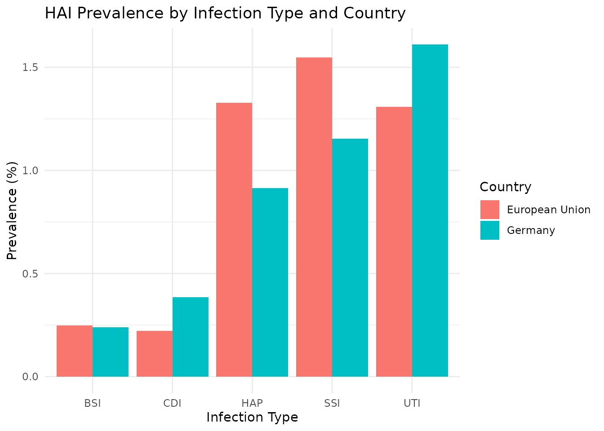
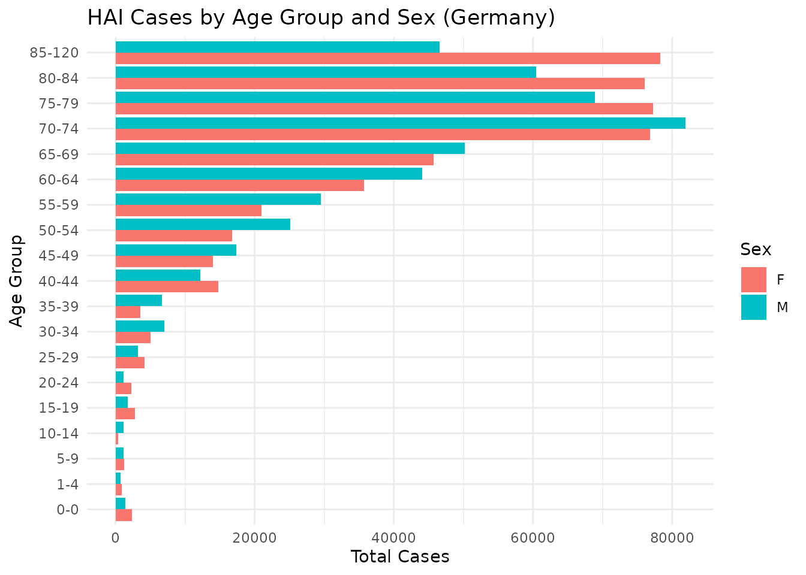

Introduction to healthburdenr
Jay Ashok Chauhan
3 November 2025
introduction-to-healthburdenr.RmdIntroduction
The healthburdenr package provides tools for analyzing
and visualizing the burden of healthcare-associated infections (HAIs)
using data from German and European Union Point Prevalence Surveys
(PPS).
What are Healthcare-Associated Infections?
Healthcare-Associated Infections (HAIs) are infections that patients acquire during the course of receiving healthcare treatment. These infections were not present or incubating at the time of admission and represent a significant public health challenge.
What is BHAI?
BHAI (Burden of Healthcare-Associated Infections) is a systematic methodology developed to estimate the population-level burden of HAIs. It combines surveillance data from Point Prevalence Surveys with epidemiological modeling to quantify:
- Cases: Annual number of infection episodes
-
Deaths: Mortality directly attributable to
HAIs
- DALYs: Disability-Adjusted Life Years (overall population health loss)
- YLL: Years of Life Lost due to premature mortality
- YLD: Years Lived with Disability due to infection morbidity
The methodology uses Monte Carlo simulation (500 runs) to provide point estimates with 95% confidence intervals, accounting for uncertainty in the underlying data.
Installation
You can install healthburdenr from GitHub:
# Install devtools if you haven't already
install.packages("remotes")
# Install healthburdenr
remotes::install_github("ETC5523-2025/assignment-4-packages-and-shiny-apps-jcha0338-monash")Package Datasets
The package includes three main datasets:
1. Survey Sample Distribution
Point prevalence survey data showing HAI prevalence across countries:
data(bhai_pps_sample_distribution)
# View structure
glimpse(bhai_pps_sample_distribution)
#> Rows: 10
#> Columns: 4
#> $ country <chr> "European Union", "European Union", "European Unio…
#> $ infection <chr> "BSI", "HAP", "UTI", "SSI", "CDI", "HAP", "SSI", "…
#> $ num_hai_patients <int> 475, 2532, 2496, 2950, 425, 88, 111, 23, 155, 37
#> $ num_survey_patients <int> 190718, 190718, 190718, 190718, 190718, 9626, 9626…
# View first few rows
head(bhai_pps_sample_distribution)
#> # A tibble: 6 × 4
#> country infection num_hai_patients num_survey_patients
#> <chr> <chr> <int> <int>
#> 1 European Union BSI 475 190718
#> 2 European Union HAP 2532 190718
#> 3 European Union UTI 2496 190718
#> 4 European Union SSI 2950 190718
#> 5 European Union CDI 425 190718
#> 6 Germany HAP 88 9626Key variables:
-
country: Germany or European Union -
infection: Type of HAI (HAP, SSI, BSI, UTI, CDI) -
num_hai_patients: Number of patients with this infection in the survey -
num_survey_patients: Total number of patients surveyed
This dataset represents the raw survey data from point prevalence surveys - a snapshot of how many patients had infections on the survey day.
2. Population Burden Estimates
Annual burden estimates from BHAI modeling with confidence intervals:
data(bhai_pop_est)
# View structure
glimpse(bhai_pop_est)
#> Rows: 12
#> Columns: 18
#> $ infection <chr> "HAP", "SSI", "BSI", "UTI", "CDI", "ALL", "BSI",…
#> $ cases_point_estimate <int> 107168, 92425, 26801, 213207, 36355, 478745, 112…
#> $ cases_lower_ci <int> 83237, 75573, 15827, 177854, 26405, 425214, 1000…
#> $ cases_upper_ci <int> 136113, 117042, 42781, 255501, 50530, 534626, 12…
#> $ deaths_point_estimate <int> 4113, 2300, 3841, 3754, 2064, 16439, 16959, 2654…
#> $ deaths_lower_ci <int> 1093, 1881, 2015, 1490, 81, 10602, 10843, 7358, …
#> $ deaths_upper_ci <int> 8389, 2909, 6990, 7533, 4485, 23202, 23099, 5249…
#> $ daly_point_estimate <int> 69477, 28553, 57993, 68335, 22101, 253586, 39187…
#> $ daly_lower_ci <int> 37436, 23286, 31038, 28234, 2088, 179459, 263262…
#> $ daly_upper_ci <int> 121253, 35988, 100293, 127400, 47754, 352290, 51…
#> $ yll_point_estimate <int> 42521, 28108, 49430, 45406, 21094, 192603, 33373…
#> $ yll_lower_ci <int> 10974, 22906, 24875, 18286, 806, 127665, 213384,…
#> $ yll_upper_ci <int> 86817, 35444, 87104, 95251, 46369, 275136, 45454…
#> $ yld_point_estimate <int> 28327, 447, 8688, 20819, 980, 59949, 56503, 2254…
#> $ yld_lower_ci <int> 17915, 343, 4371, 8584, 178, 40202, 35012, 14187…
#> $ yld_upper_ci <int> 44502, 580, 16377, 40610, 2141, 86219, 84795, 31…
#> $ country <chr> "Germany", "Germany", "Germany", "Germany", "Ger…
#> $ population <int> 80767463, 80767463, 80767463, 80767463, 80767463…
# View summary
head(bhai_pop_est)
#> # A tibble: 6 × 18
#> infection cases_point_estimate cases_lower_ci cases_upper_ci
#> <chr> <int> <int> <int>
#> 1 HAP 107168 83237 136113
#> 2 SSI 92425 75573 117042
#> 3 BSI 26801 15827 42781
#> 4 UTI 213207 177854 255501
#> 5 CDI 36355 26405 50530
#> 6 ALL 478745 425214 534626
#> # ℹ 14 more variables: deaths_point_estimate <int>, deaths_lower_ci <int>,
#> # deaths_upper_ci <int>, daly_point_estimate <int>, daly_lower_ci <int>,
#> # daly_upper_ci <int>, yll_point_estimate <int>, yll_lower_ci <int>,
#> # yll_upper_ci <int>, yld_point_estimate <int>, yld_lower_ci <int>,
#> # yld_upper_ci <int>, country <chr>, population <int>Key variables:
-
infection: HAI type (plus “ALL” for aggregate across all infections) -
country: Germany or European Union -
population: Total population of the region -
cases_point_estimate,cases_lower_ci,cases_upper_ci: Annual cases with 95% CI -
deaths_point_estimate,deaths_lower_ci,deaths_upper_ci: Annual deaths with 95% CI -
daly_point_estimate,daly_lower_ci,daly_upper_ci: DALYs with 95% CI -
yll_point_estimate,yll_lower_ci,yll_upper_ci: Years of Life Lost with 95% CI -
yld_point_estimate,yld_lower_ci,yld_upper_ci: Years Lived with Disability with 95% CI
This dataset represents annual burden estimates extrapolated from the survey data using BHAI methodology.
3. Stratified Results
Demographic breakdown of burden by age groups and sex:
data(bhai_strata_summary)
# View structure
glimpse(bhai_strata_summary)
#> Rows: 456
#> Columns: 13
#> $ country <chr> "European Union", "European Union", "European Union", …
#> $ age_group <fct> 0-0, 1-4, 5-9, 10-14, 15-19, 20-24, 25-29, 30-34, 35-3…
#> $ sex <chr> "F", "F", "F", "F", "F", "F", "F", "F", "F", "F", "F",…
#> $ infection <chr> "BSI", "BSI", "BSI", "BSI", "BSI", "BSI", "BSI", "BSI"…
#> $ ncases_lower_ci <dbl> 2738.4539, 1685.2024, 842.6012, 421.3006, 631.9509, 21…
#> $ ncases_estimate <dbl> 3066.5300, 1887.0954, 943.5477, 471.7738, 707.6608, 23…
#> $ ncases_upper_ci <dbl> 3409.1493, 2097.9381, 1048.9690, 524.4845, 786.7268, 2…
#> $ ndeath_lower_ci <dbl> 296.76925, 182.62723, 91.31362, 45.65681, 68.48521, 22…
#> $ ndeath_estimate <dbl> 464.14596, 285.62828, 142.81414, 71.40707, 107.11061, …
#> $ ndeath_upper_ci <dbl> 632.16958, 389.02743, 194.51372, 97.25686, 145.88529, …
#> $ daly_lower_ci <dbl> 26621.1076, 9664.2285, 4593.4823, 4137.6875, 3948.9668…
#> $ daly_estimate <dbl> 39675.3035, 14398.6625, 6843.5173, 6166.7148, 5883.914…
#> $ daly_upper_ci <dbl> 52257.3182, 18963.4828, 9013.0422, 8122.3402, 7749.408…
# View sample
head(bhai_strata_summary)
#> # A tibble: 6 × 13
#> country age_group sex infection ncases_lower_ci ncases_estimate
#> <chr> <fct> <chr> <chr> <dbl> <dbl>
#> 1 European Union 0-0 F BSI 2738. 3067.
#> 2 European Union 1-4 F BSI 1685. 1887.
#> 3 European Union 5-9 F BSI 843. 944.
#> 4 European Union 10-14 F BSI 421. 472.
#> 5 European Union 15-19 F BSI 632. 708.
#> 6 European Union 20-24 F BSI 211. 236.
#> # ℹ 7 more variables: ncases_upper_ci <dbl>, ndeath_lower_ci <dbl>,
#> # ndeath_estimate <dbl>, ndeath_upper_ci <dbl>, daly_lower_ci <dbl>,
#> # daly_estimate <dbl>, daly_upper_ci <dbl>Key variables:
-
country: Germany or European Union -
infection: HAI type (HAP, SSI, BSI, UTI, CDI) -
sex: Male or Female -
age_group: Age categories -
ncases_estimate,ncases_lower_ci,ncases_upper_ci: Cases in this demographic stratum -
ndeath_estimate,ndeath_lower_ci,ndeath_upper_ci: Deaths in this stratum -
daly_estimate,daly_lower_ci,daly_upper_ci: DALYs in this stratum
This dataset allows demographic analysis to identify vulnerable populations.
Quick Start: The Interactive Dashboard
The easiest way to explore the data is through the interactive Shiny dashboard:
run_app()This launches a web-based dashboard with three main tabs:
- Overview: Survey sample distribution with interactive treemap showing HAI prevalence
- Population Estimates: Annual burden estimates with data tables and bubble charts
- Stratified Analysis: Demographic patterns by age and sex with diverging bar charts
The dashboard provides:
- Interactive filtering and exploration
- Hover tooltips with detailed information
- Downloadable data tables
- Professional visualizations
- Comprehensive interpretation guides
Basic Data Exploration
Survey Prevalence
Calculate HAI prevalence rates:
# Calculate prevalence by country and infection
prevalence_summary <- bhai_pps_sample_distribution |>
mutate(
prevalence_pct = (num_hai_patients / num_survey_patients) * 100
) |>
arrange(country, desc(prevalence_pct))
print(prevalence_summary)
#> # A tibble: 10 × 5
#> country infection num_hai_patients num_survey_patients prevalence_pct
#> <chr> <chr> <int> <int> <dbl>
#> 1 European Union SSI 2950 190718 1.55
#> 2 European Union HAP 2532 190718 1.33
#> 3 European Union UTI 2496 190718 1.31
#> 4 European Union BSI 475 190718 0.249
#> 5 European Union CDI 425 190718 0.223
#> 6 Germany UTI 155 9626 1.61
#> 7 Germany SSI 111 9626 1.15
#> 8 Germany HAP 88 9626 0.914
#> 9 Germany CDI 37 9626 0.384
#> 10 Germany BSI 23 9626 0.239Visualize Prevalence
library(ggplot2)
ggplot(prevalence_summary, aes(x = infection, y = prevalence_pct, fill = country)) +
geom_col(position = "dodge") +
labs(
title = "HAI Prevalence by Infection Type and Country",
x = "Infection Type",
y = "Prevalence (%)",
fill = "Country"
) +
theme_minimal()
Population Burden
Examine total burden by country:
# Filter for "ALL" row (total across infections)
total_burden <- bhai_pop_est |>
filter(infection == "ALL") |>
select(country, cases_point_estimate, deaths_point_estimate, daly_point_estimate)
print(total_burden)
#> # A tibble: 2 × 4
#> country cases_point_estimate deaths_point_estimate daly_point_estimate
#> <chr> <int> <int> <int>
#> 1 Germany 478745 16439 253586
#> 2 European Union 2365538 77510 1469746Calculate case-fatality rates:
# CFR by infection
cfr_by_infection <- bhai_pop_est |>
filter(infection != "ALL") |>
mutate(
cfr_pct = (deaths_point_estimate / cases_point_estimate) * 100
) |>
select(country, infection, cases_point_estimate, deaths_point_estimate, cfr_pct) |>
arrange(country, desc(cfr_pct))
print(cfr_by_infection)
#> # A tibble: 10 × 5
#> country infection cases_point_estimate deaths_point_estimate cfr_pct
#> <chr> <chr> <int> <int> <dbl>
#> 1 European Union BSI 112046 16959 15.1
#> 2 European Union CDI 81191 4611 5.68
#> 3 European Union HAP 728270 26548 3.65
#> 4 European Union SSI 560543 12900 2.30
#> 5 European Union UTI 882930 15078 1.71
#> 6 Germany BSI 26801 3841 14.3
#> 7 Germany CDI 36355 2064 5.68
#> 8 Germany HAP 107168 4113 3.84
#> 9 Germany SSI 92425 2300 2.49
#> 10 Germany UTI 213207 3754 1.76Stratified Analysis
Identify highest-burden age groups:
# Sum cases across infections by age group
age_burden <- bhai_strata_summary |>
filter(country == "Germany") |>
group_by(age_group, sex) |>
summarise(
total_cases = sum(ncases_estimate),
total_deaths = sum(ndeath_estimate),
.groups = "drop"
) |>
arrange(desc(total_cases))
head(age_burden, 10)
#> # A tibble: 10 × 4
#> age_group sex total_cases total_deaths
#> <fct> <chr> <dbl> <dbl>
#> 1 70-74 M 81871. 3135.
#> 2 85-120 F 78311. 2321.
#> 3 75-79 F 77247. 2629.
#> 4 70-74 F 76842. 2338.
#> 5 80-84 F 76050. 2348.
#> 6 75-79 M 68859. 2352.
#> 7 80-84 M 60463. 2043.
#> 8 65-69 M 50232. 2156.
#> 9 85-120 M 46612. 1639.
#> 10 65-69 F 45704. 1708.Visualize sex differences:
ggplot(age_burden, aes(x = age_group, y = total_cases, fill = sex)) +
geom_col(position = "dodge") +
coord_flip() +
labs(
title = "HAI Cases by Age Group and Sex (Germany)",
x = "Age Group",
y = "Total Cases",
fill = "Sex"
) +
theme_minimal()
Example Analyses
Example 1: Which infection has the highest mortality?
bhai_pop_est |>
filter(infection != "ALL", country == "Germany") |>
arrange(desc(deaths_point_estimate)) |>
select(infection, deaths_point_estimate, deaths_lower_ci, deaths_upper_ci) |>
head(3)
#> # A tibble: 3 × 4
#> infection deaths_point_estimate deaths_lower_ci deaths_upper_ci
#> <chr> <int> <int> <int>
#> 1 HAP 4113 1093 8389
#> 2 BSI 3841 2015 6990
#> 3 UTI 3754 1490 7533Example 2: Which age group is most vulnerable?
bhai_strata_summary |>
filter(country == "Germany") |>
group_by(age_group) |>
summarise(
total_daly = sum(daly_estimate),
.groups = "drop"
) |>
arrange(desc(total_daly)) |>
head(5)
#> # A tibble: 5 × 2
#> age_group total_daly
#> <fct> <dbl>
#> 1 70-74 66593.
#> 2 65-69 56089.
#> 3 75-79 48789.
#> 4 60-64 45290.
#> 5 50-54 38899.Example 3: Compare burden per capita
bhai_pop_est |>
filter(infection == "ALL") |>
mutate(
cases_per_100k = (cases_point_estimate / population) * 100000,
deaths_per_100k = (deaths_point_estimate / population) * 100000
) |>
select(country, cases_per_100k, deaths_per_100k)
#> # A tibble: 2 × 3
#> country cases_per_100k deaths_per_100k
#> <chr> <dbl> <dbl>
#> 1 Germany 593. 20.4
#> 2 European Union 468. 15.3Best Practices
1. Always consider confidence intervals
Don’t focus solely on point estimates - confidence intervals provide crucial information about uncertainty.
2. Compare rates, not absolute numbers
When comparing countries, use per capita rates to account for population differences.
3. Understand the “ALL” row
The “ALL” row in bhai_pop_est is the
sum of the five infection types, not a separate
category.
Next Steps
Now that you understand the basics, explore further:
Launch the dashboard: Use
run_app()for interactive exploration with professional visualizationsRead the dashboard guide:
vignette("dashboard-guide")provides a detailed walkthrough of all dashboard features-
Explore function documentation: Use
?function_namefor detailed help:-
?run_app- Launch the dashboard -
?flatten_pps- Flatten PPS objects -
?bhai_pop_est- Population estimates dataset
-
Conduct custom analyses: Use the datasets programmatically for your specific research questions
Export and share: Download data and visualizations from the dashboard for reports and presentations
References
- BHAI R package: Zacher B (2019). BHAI: Estimate the Burden of Healthcare-Associated Infections. R package version 0.99.2, https://CRAN.R-project.org/package=BHAI.
For detailed methodology, see:
Zacher B, Haller S, Eckmanns T, Noll I, Weiss B, Widders G, Gastmeier P, Monnet DL (2019). Application of a new methodology and R package reveals a high burden of healthcare-associated infections (HAI) in Germany compared to the average in the European Union/European Economic Area, 2011 to 2012. Euro Surveill. 24(46):pii=1900135. https://doi.org/10.2807/1560-7917.ES.2019.24.46.1900135
Getting Help
-
Package documentation:
?healthburdenr -
Function help:
?run_app,?flatten_pps -
Dataset help:
?bhai_pop_est,?bhai_strata_summary